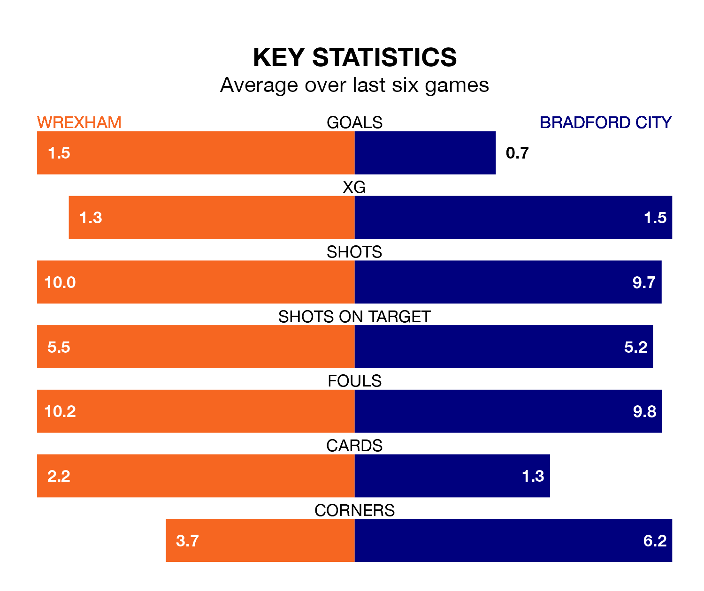

Wrexham host Bradford City in Saturday's match at the Racecourse Ground looking to bounce back from defeat last time out in EFL League Two.
The Dragons, who sit fourth in the league after 28 games, fell to a 3-1 away defeat to Salford City on February 3.
They face a Bradford side who secured a draw in their last match, a 0-0 tie with AFC Wimbledon, and who sit 18th in the table.
With 55 goals in 28 games so far this season, Wrexham are the league's joint-third-highest scorers with 2.0 goals per game. And they are conceding fewer than average, letting in 40 goals at a rate of 1.4 per game.
Bradford, meanwhile, are below average scorers, with 1.2 goals per game, compared to a league average of 1.5. They have conceded 1.3 goals per game.
The Dragons are in mixed form in EFL League Two, with three wins and three losses from their last six games.
With no wins and three draws over that period, City's form is much worse – they have taken three points from 18, compared to the hosts' nine.
In Elliott Lee, Wrexham have one of the league's most on-form strikers so far this season. He has notched 13 goals in 28 appearances, to sit eighth in the scoring charts.
His goal rate of one every 185 minutes is quicker than that of Andy Cook, the Bantams' top scorer with a goal every 206 minutes, and a total of 11 goals in 27 games.
Over the last two years, Wrexham and Bradford have played each other twice. they drew both of them.
Their last meeting was on October 21, when they played out a 1-1 draw.
Updated: 14:59 (UTC), 05/02/24